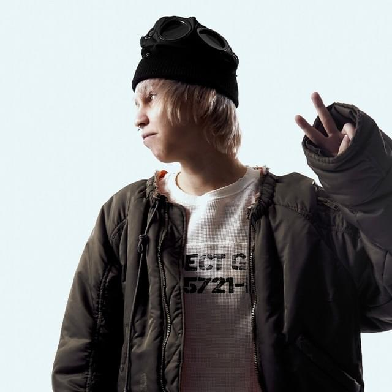
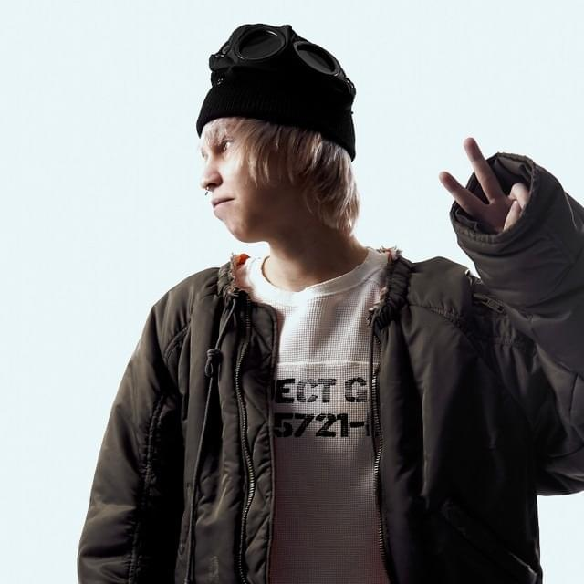

kai angel - damage
- are you happy
- im all blessed the fuck up
- basement
- amy
- mirrors
- chelsea smile
- 444
- parasocial freestyle
- designer's paradise
- fire walk with me
- madam
- sirens
- slave to the rhythm
- drive
- welcome to forever
- 0 tears
- damage
madk1d - Он сказал поехали!
- типичная ситуация
- 1 мая (feat. CUPSIZE)
- самый лучший трудовик
- грустная история
- незаконно (feat. голодный)
- number 9
- заправка
- типичная ситуация (acoustic version)
- мориарти
тёмный принц
Российский рэп-исполнитель и продюсер. Музыкальную карьеру начал в марте 2024 года. Также он имеет альтер-эго ashleyrossmith. Музыкальная карьера Артема Бондарева началась в достаточно юном возрасте. Он дебютировал как битмейкер еще в 2020-м, сначала под ником Jonathan Blad, потом — origon, причем работал с такими артистами, как LOVV66 и BUSHIDO ZHO. Его продакшен быстро выделился: внимание к структуре, острота аранжировок, авторский почерк.
Темный принц влетел на сцену, словно вспышка. Артист с загадочным образом и резким саундом стремительно ворвался в поле русскоязычного SoundCloud-рэпа. Ему хватило нескольких релизов, чтобы стать ярким представителем новой волны. Музыка принца — напряженный сплав мрачной лирики, густого звука, плотных битов и нарочитой жанровой гибкости. Он сразу задал высокую планку и стал одним из наиболее обсуждаемых имен в цифровом андеграунде. Подробнее
Чарт
| Альбом | Артист | Яндекс.Музыка | SoundCloud |
|---|---|---|---|
| flexyswag | madk1d | 453481 | 19849 |
| Он сказал поехали! | madk1d | 150136 | 160998 |
| Мрачные треды | тёмный принц | 85185 | 102271 |

FORTUNA 812 - basedgod
- intronett
- ТАК УМИРАЛИ ДЕНЬГИ (TIHMWD) by FORTUNA 812 & BOSSFIGHT DUBSTEP CEO
- fckwrld
- top model
- king of NY
- gotham
- ww basedgod life
- lora piana
- flexy supra
- темный принц (feat. тёмный принц)
- feel this pain
- jessie (feat. Jessie Luck)
- dirty like my soul
madk1d - ****swag
- так по***
- цена (feat. паранойя)
- ты че обиделась (feat. тёмный принц)
- супермаркет
- засосы
- ****swag2010
- сдвг
- последним летом (feat. GRILLYAZH)
- танцор